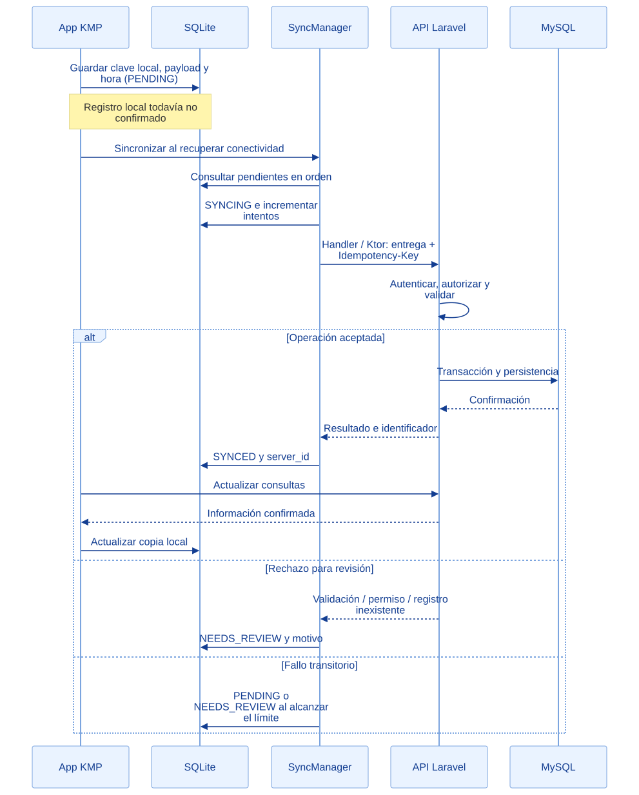

EcoLact / Arquitectura de software
Sincronización de datos
Del pendiente local a la respuesta del servidor
La cola local conserva operaciones que deben comunicarse al backend. SyncManager las despacha por tipo, interpreta el resultado y deja visible qué fue confirmado, qué sigue pendiente y qué necesita revisión.
Una entrega sin conexión
El ejemplo corresponde al registro de una entrega por el acopiador. MySQL representa el destino central previsto; la conexión efectiva de Laravel depende de su configuración. El manejador utiliza Ktor, no una conexión directa desde SQLite a MySQL.


Consultar la fuente editable
sequenceDiagram
participant A as App KMP
participant D as SQLite
participant S as SyncManager
participant B as API Laravel
participant M as MySQL
A->>D: Guardar clave local, payload y hora (PENDING)
Note over A,D: Registro local todavía no confirmado
A->>S: Sincronizar al recuperar conectividad
S->>D: Consultar pendientes en orden
S->>D: SYNCING e incrementar intentos
S->>B: Handler / Ktor: entrega + Idempotency-Key
B->>B: Autenticar, autorizar y validar
alt Operación aceptada
B->>M: Transacción y persistencia
M-->>B: Confirmación
B-->>S: Resultado e identificador
S->>D: SYNCED y server_id
A->>B: Actualizar consultas
B-->>A: Información confirmada
A->>D: Actualizar copia local
else Rechazo para revisión
B-->>S: Validación / permiso / registro inexistente
S->>D: NEEDS_REVIEW y motivo
else Fallo transitorio
S->>D: PENDING o NEEDS_REVIEW al alcanzar el límite
end
Estados y transiciones comprobados
La recuperación de un envío interrumpido está implementada por componentes concretos, como AcopiadorSync; no es una garantía universal añadida por el diagrama. Un pendiente sin manejador o cuyo canPush no permite enviarlo conserva su estado.


Consultar la fuente editable
stateDiagram-v2
[*] --> PENDING: Encolar
PENDING --> SYNCING: Manejador disponible y canPush
SYNCING --> SYNCED: Success y server_id
SYNCING --> PENDING: Fallo transitorio antes del límite
SYNCING --> NEEDS_REVIEW: Rechazo o límite alcanzado
NEEDS_REVIEW --> PENDING: Corrección y retryFromReview
SYNCING --> PENDING: Recuperación específica del rol al reiniciar
SYNCED --> [*]: No entra en selectPending
PENDING
Guardado localmente, todavía debe enviarse. La selección SQL usa fecha de creación y rowid para desempatar.
SYNCING
Envío en curso; markSyncing incrementa attempt_count antes de llamar al manejador.
SYNCED
Respuesta aceptada y server_id conservado. No forma parte de la consulta de pendientes.
NEEDS_REVIEW
Se conserva el payload y el motivo. No vuelve a enviarse automáticamente hasta que un flujo de revisión lo permita.
Detección, orden y reintentos
SyncManager usa un Mutex para evitar barridos simultáneos y registra manejadores según operation_type. Su observador genérico reacciona al retorno de conectividad. AcopiadorSync también sincroniza al entrar o volver la señal mientras su interfaz está activa, actualiza consultas después del envío y repite normalmente cada cinco minutos; los errores de actualización tienen espera creciente hasta ese intervalo.
El límite del motor es cinco intentos transitorios, contando el envío que alcanza el límite. No son cinco reintentos adicionales a un primer intento. La tabla incrementa un contador de intentos por operación; retryFromReview no lo reinicia. El manejador del acopiador clasifica 422, 403 y 404 como rechazos; los demás errores capturados pueden entrar como transitorios. No todos los manejadores tienen necesariamente la misma clasificación.
Conflictos que requieren una decisión
Un pendiente puede corresponder a un proveedor desactivado, un recorrido cerrado o datos que ya no son válidos. Se muestra el motivo y se conserva la operación para revisión: no existe una fusión automática universal de conflictos. Para entregas, el repositorio permite corregir payload pendiente o rechazado, preservando la hora real; cambiar litros está limitado a diez minutos desde el evento. El descarte explícito está limitado a entregas rechazadas en ese flujo.
Idempotencia: garantías por operación
| Operación | Protección comprobada |
|---|---|
| Entrega directa | Idempotency-Key llega a RegistrarEntrega; búsqueda por token, comprobación del usuario e índice único |
| Acopio de una parada | Clave local enviada como token de idempotencia y cabecera; delega en RegistrarEntrega |
| Inicio/cierre de producción, compra de insumos y venta | Middleware idempotente en esas rutas API; guarda respuesta por usuario y clave |
| Inicio de recorrido / No entregó | Comportamiento específico del caso de uso; no equivale a usar el middleware en todas las rutas |
| Guardar/finalizar análisis de calidad | El manejador no usa la misma cabecera; no se atribuye la garantía genérica |
Repetir no es editar. El middleware de idempotencia distingue método y ruta, pero no compara el cuerpo. Una operación ya confirmada devuelve su respuesta guardada; cambiar el payload con la misma clave no transforma la operación original. No hay atomicidad distribuida: si la respuesta se pierde, se depende de la protección del endpoint al reintentar.
Evidencias de implementación
Las referencias identifican código revisado. El área de imagen está preparada para la captura manual del archivo indicado; el marcador visual no constituye una captura de la implementación.
Despacho y resultado de la sincronización
El motor recorre las operaciones pendientes bajo un bloqueo y usa un manejador según su tipo.

Qué demuestra. El resultado del envío cambia la fila a SYNCED, NEEDS_REVIEW o PENDING. MAX_INTENTOS_TRANSITORIOS limita los intentos.
Archivo de imagen: sync-manager.png · Abrir imagen
Ubicación en GitHub: EcoLactMobile/shared/src/commonMain/kotlin/pe/edu/upeu/ecolactmobile/core/sync/SyncManager.kt
Fragmento sugerido para la captura: líneas 66–91 de la revisión documentada.
Cola persistida y reenvíos
El repositorio encapsula las consultas SQLDelight y conserva la clave de una operación al reintentar.

Qué demuestra. enqueueWithId guarda tipo, payload y fechas; los métodos de transición actualizan el estado de la operación.
Archivo de imagen: sync-queue.png · Abrir imagen
Ubicación en GitHub: EcoLactMobile/shared/src/commonMain/kotlin/pe/edu/upeu/ecolactmobile/core/sync/SyncQueueRepository.kt
Fragmento sugerido para la captura: líneas 27–48 de la revisión documentada.
Fuentes adicionales y alcance de la revisión
Revisión estática del repositorio local: 28 de octubre de 2026. Enlaces a la revisión 75901337489d; la existencia de cada archivo y los fragmentos sugeridos se comprobaron localmente. No se ejecutaron servicios de negocio ni se verificó un despliegue.
- EcoLactMobile/shared/src/commonMain/kotlin/pe/edu/upeu/ecolactmobile/core/sync/SyncManager.kt
- EcoLactMobile/shared/src/commonMain/sqldelight/pe/edu/upeu/ecolactmobile/core/database/SyncQueue.sq
- EcoLactMobile/shared/src/commonMain/kotlin/pe/edu/upeu/ecolactmobile/feature/acopiador/AcopiadorSync.kt
- EcoLactMobile/shared/src/commonMain/kotlin/pe/edu/upeu/ecolactmobile/feature/acopiador/AcopiadorSyncHandler.kt
- EcoLactMobile/shared/src/commonMain/kotlin/pe/edu/upeu/ecolactmobile/feature/calidad/CalidadSyncHandler.kt
- EcoLactWeb/app/Http/Middleware/IdempotenciaApi.php
- EcoLactWeb/database/migrations/2026_09_19_090008_alter_entregas_add_recorrido_y_token.php